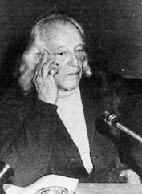

Empieza el bachillerato en el Colegio de los Jesuitas del Puerto de Santa María. En 1917 se traslada a Madrid, donde abandona el bachillerato por la pintura, que ejerce una gran influencia en su obra; en 1922 realiza una exposición en el Ateneo. Por motivos de salud se traslada, poco después, a vivir en las sierras de Guadarrama y Rute, donde empieza a escribir sus primeras poesías, recogidas bajo el título de Marinero en tierra. Con este libro obtiene el Premio Nacional de Literatura (1924-25), otorgado por un jurado que integraban Antonio Machado, Menéndez Pidal y Gabriel Miró. A esta obra siguieron La Amante (1925) y El alba de alhelí (1925-26). En sus primeros libros se aprecia claramente la influencia de Gil Vicente, del Cancionero y Romancero españoles y de otros autores como Garcilaso, Góngora, Lope, Bécquer, Baudelaire, Juan Ramón Jiménez o Antonio Machado. Su poesía es "popular" -según Juan Ramón Jiménez-, "pero sin acarreo fácil, personalísima, de tradición española, pero sin retorno innecesario, nueva, fresca y acabada a la vez, rendida, ágil, graciosa, parpadeante: andalucísima". La etapa neogongorista y humorista de Cal y canto (1926-1927) marca la transición de este autor a la fase superrealista de Sobre los ángeles (1927-1928). A partir de entonces, y tras afiliarse al partido comunista, su obra adquiere tono político. Este giro le lleva a considerar su obra anterior como un cielo cerrado y una contribución irremediable a la poesía burguesa. La poesía de Alberti cobra cada vez más un tono irónico y desgarrado, como los poemas burlescos Yo era un tonto y lo que he visto me ha hecho dos tontos (1929), Sermones y moradas (1929-1930) y la elegía cívica Con los zapatos puestos tengo que morir (1930). A partir de 1931 aborda el teatro, estrenando El hombre deshabitado y El adefesio. Posteriormente recorre varios países de Europa, pensionado por la Junta de Ampliación de Estudios, para estudiar las nuevas tendencias del teatro.
...Y ya estarán los esteros rezumando azul de mar. ¡Dejadme ser, salineros, granito del salinar! ¡Qué bien, a la madrugada, correr en las vagonetas, llenas de nieve salada, hacia las blancas casetas! Dejo de ser marinero, madre, por ser salinero.Volver al índice